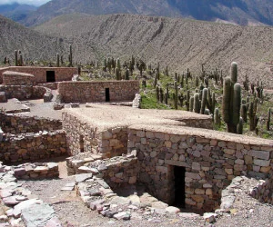
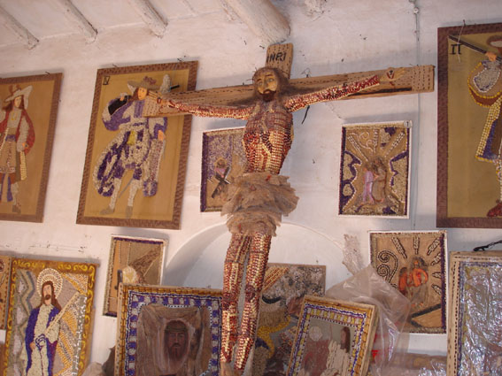
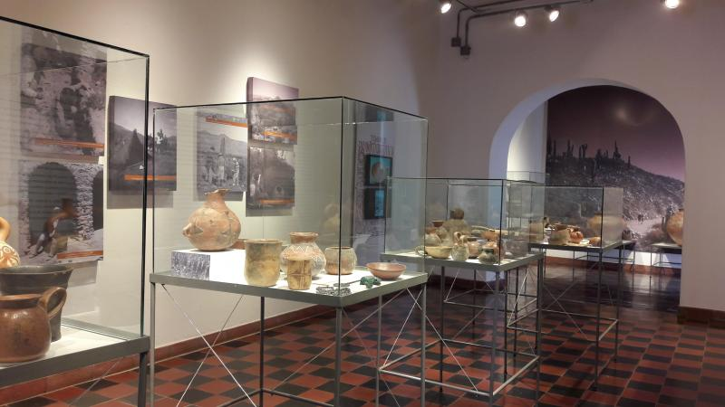
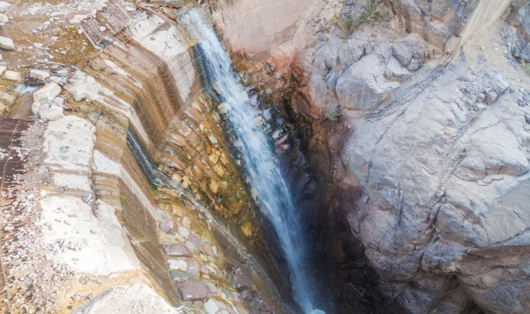
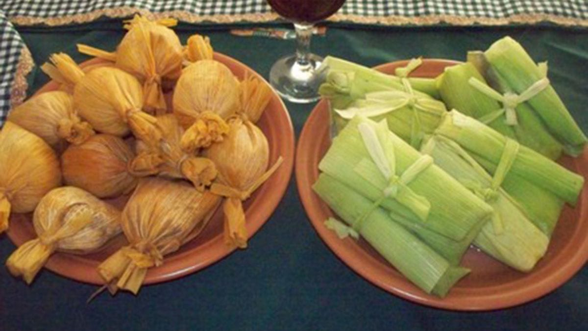
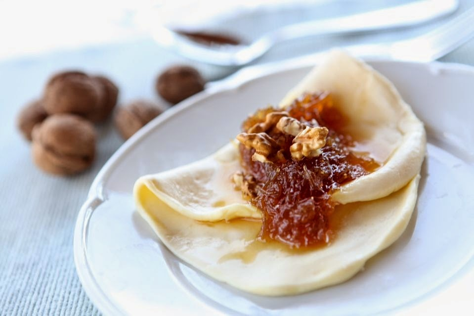
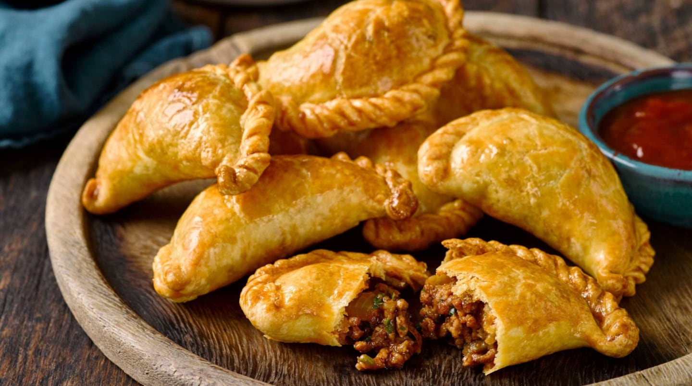

combina pasado preincaico y bullicio contemporáneo. Dominando el valle se alza el Pucará de Tilcara, una antigua fortaleza omaguaca excavada
en la colina. A sus pies, el río Huasamayo y colinas multicolores rodean casitas pintorescas donde sigue viva la cultura andina (arte, peñas folclóricas, ferias de artesanía).
El aire seco perfumado con mates y coplas, y los senderos que trepan a miradores, hacen de Tilcara un lugar mágico para el viajero.
¿Comó se llega?
En avión: Aeropuerto de Jujuy (JUJ) a ~114 km. Desde allí se puede tomar un taxi hasta la terminal de Jujuy y luego colectivos hacia Tilcara.
En auto: Ruta Nacional 9. Tilcara está a 84 km de San Salvador de Jujuy, siguiendo la RN9 hacia el norte. También es accesible desde Humahuaca por la misma carretera.
En colectivo: Existen varias empresas que comunican Jujuy y Salta con Tilcara, con ~10–12 servicios diarios desde ciudades cercanas (Salta, Jujuy). Desde Purmamarca un corto viaje por la RN9 lleva a Tilcara en 30–40 minutos.
Actividades que se pueden hacer
-

- Pucará de Tilcara 
- Museo de las Ermitas de Tilcara 
- Museo Arqueológico y Antropológico “Dr. Eduardo Casanova” 
- Garganta del Diablo
Gastronomia
iene una gran variedad de riqueza grastronomica, como cultural. Teniendo platos como:
Es comun que se hagan embutidos a base de la carne de la llama y quesos a partir de la leche de cabra
Una comida tipica jujeña. Que en sus interior de carne con especias y queso (humita)
El quesillo se elabora a partir de la leche de cabra y se come en conjunto con dulce de cayote en forma de postre
Las empnadas quebradeñas son elaboradas totalmente a mano. Cortando la carne a chucillo y especialmente condimentada